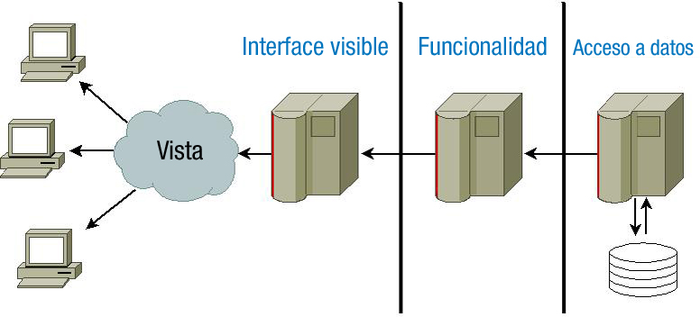

Cuando programas una aplicación, utilizas un lenguaje de programación. Por ejemplo, utilizas el lenguaje Java para crear aplicaciones que se ejecuten en distintos sistemas operativos. Al programar cada aplicación utilizas ciertas herramientas como un entorno de desarrollo o librerías de código. Además, una vez acabado su desarrollo, esa aplicación necesitará ciertos componentes para su ejecución, como por ejemplo una máquina virtual de Java.
En este bloque vas a aprender las distintas tecnologías que se pueden utilizar para programar aplicaciones que se ejecuten en un servidor web, y cómo se relacionan unas con otras. Verás las ventajas e inconvenientes de utilizar cada una, y qué lenguajes de programación deberás aprender para utilizarlas.
Los componentes principales con los que debes contar para ejecutar aplicaciones web en un servidor son los siguientes:
- Un servidor web para recibir las peticiones de los clientes web (normalmente navegadores) y enviarles la página que solicitan (una vez generada puesto que hablamos de páginas web dinámicas). El servidor web debe conocer el procedimiento a seguir para generar la página web: qué módulo se encargará de la ejecución del código y cómo se debe comunicar con él.
- El módulo encargado de ejecutar el código o programa y generar la página web resultante. Este módulo debe integrarse de alguna forma con el servidor web, y dependerá del lenguaje y tecnología que utilicemos para programar la aplicación web.
- Una aplicación de base de datos, que normalmente también será un servidor. Este módulo no es estrictamente necesario pero en la práctica se utiliza en todas las aplicaciones web que utilizan grandes cantidades de datos para almacenarlos.
- El lenguaje de programación que utilizarás para desarrollar las aplicaciones.
Además de los componentes a utilizar, también es importante decidir cómo vas a organizar el código de la aplicación. Muchas de las arquitecturas que se usan en la programación de aplicaciones web te ayudan a estructurar el código de las aplicaciones en capas o niveles.
El motivo de dividir en capas el diseño de una aplicación es que se puedan separar las funciones lógicas de la misma, de tal forma que sea posible ejecutar cada una en un servidor distinto (en caso de que sea necesario).

En una aplicación puedes distinguir, de forma general, funciones de presentación (se encarga de dar formato a los datos para presentárselo al usuario final), lógica (utiliza los datos para ejecutar un proceso y obtener un resultado), persistencia (que mantiene los datos almacenados de forma organizada) y acceso (que obtiene e introduce datos en el espacio de almacenamiento).
Cada capa puede ocuparse de una o varias de las funciones anteriores. Las aplicaciones web actuales utilizan lo que se conoce como arquitectura de tres niveles (en inglés three-tier architecture). Estas capas o niveles son:
- Capa de presentación: Maneja la parte de la aplicación web que ve el usuario. Es decir, se encarga de la forma de presentar la información al usuario. Consta del código del lado del cliente (HTML, JavaScript,...) que le llega al navegador, aunque ese código haya sido generado originalmente por una tecnología del lado del servidor.
- Capa lógica: Es la encargada de gestionar el funcionamiento de la aplicación. En ella se encuentran los documentos escritos en un lenguaje que se debe de interpretar en el lado del servidor (por ello, esta capa está relacionada con el servidor de aplicaciones) y cuyo resultado se enviará al servidor web para que este, a su vez, lo envíe al cliente que hizo la petición.
- Capa de negocio: Es la que contiene la información empresarial. Esta información siempre tiene como requerimiento que quede oculta a cualquier persona sin autorización. En esta capa, fundamentalmente, se encuentra el sistema gestor de bases de datos (SGBD) de la empresa, además de otros servidores que proporcionan otros recursos empresariales (como servidores de vídeo, audio, certificados …)
El diseño de cada una de estas capas influye a la hora de seleccionar uno u otro modelo de programación en la Web. Dichos modelos de programación cliente/servidor pueden clasificarse de este modo atendiendo a diferentes criterios. Así, es posible clasificarlos dependiendo del tamaño de los componentes, por la naturaleza del servicio ofrecido o según el reparto de funciones entre cliente y servidor:
- Según el tamaño de los componentes: esta primera clasificación hace referencia a qué elemento de la arquitectura web debe soportar más o menos carga de procesamiento. Se habla de configuraciones Fat Client (thin Server), donde el mayor peso de la aplicación se ejecuta en el cliente relegando al servidor a un mero administrador de datos; o Fat Server (thin client), donde la funcionalidad asociada al cliente está limitada a la presentación de la información enviada por el servidor.
- Según la naturaleza del servicio ofrecido: también es posible clasificar los entornos cliente/servidor en
función de las capacidades ofrecidas por el servidor. De esta forma, podemos encontrar servidores de ficheros,
donde el objetivo del cliente es el acceso a datos contenidos en ficheros; servidores de bases de datos, que se
centran en la provisión y administración de sistemas gestores de bases de datos; servidores de transacciones,
centrados en el concepto de transacción con el objetivo de que los flujos de información con el cliente se realicen
en un solo mensaje solicitud/respuesta; servidores de objetos, cuya principal característica es la utilización de
objetos intercomunicados, tanto en el cliente como en el servidor; o servidores web, que conforman la base del
modelo World Wide Web y que está fundamentado en la existencia de clientes simples que se comunican con
servidores web utilizando HTTP como protocolo de comunicación. - Reparto de funciones entre cliente y servidor: las diferentes tecnologías web existentes permiten gestionar
y distribuir las responsabilidades de cada una de las prestaciones funcionales entre el cliente y el servidor. Lo
más habitual es tener una configuración cliente/servidor de dos o tres capas, dependiendo de si las capas de
negocio y datos se agrupan (modelo en dos capas) o si se separan (modelo en tres capas). La separación en dos
o tres capas la podemos ver, además, tanto desde el punto de vista del software como del hardware. También existen otras configuraciones N capas.